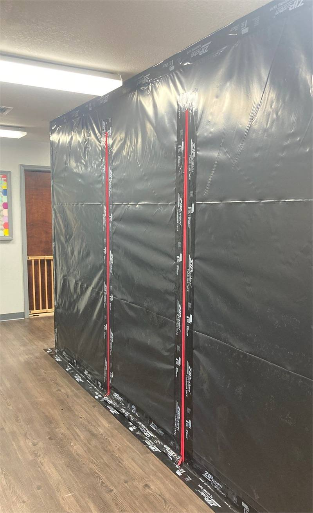
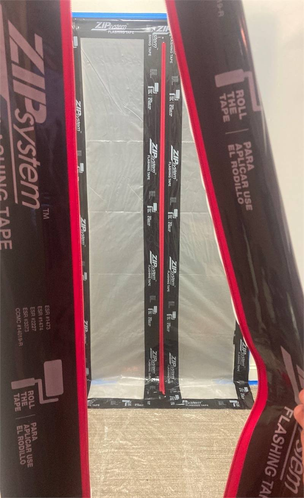
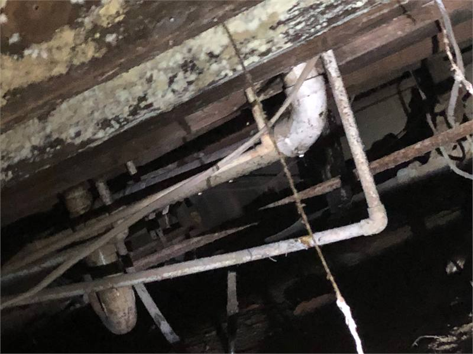
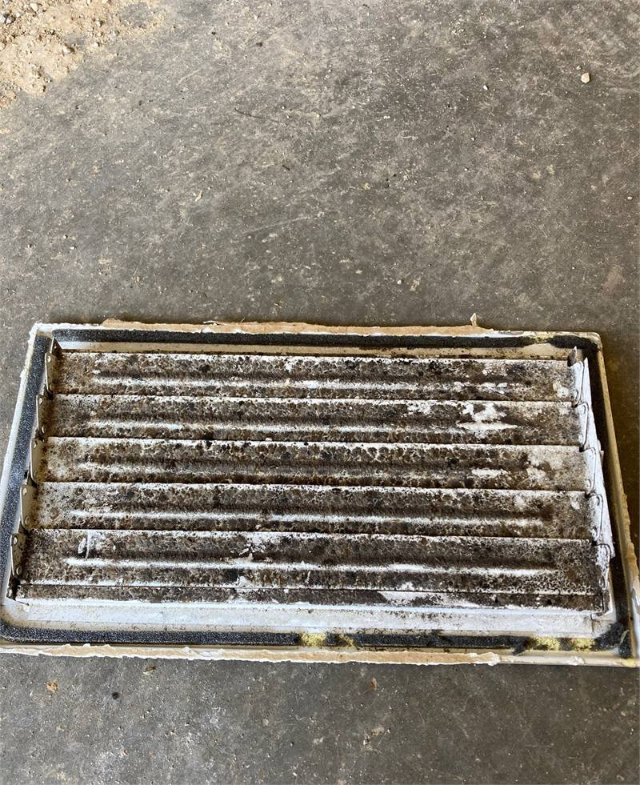
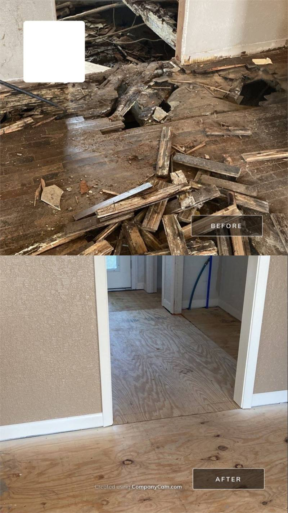
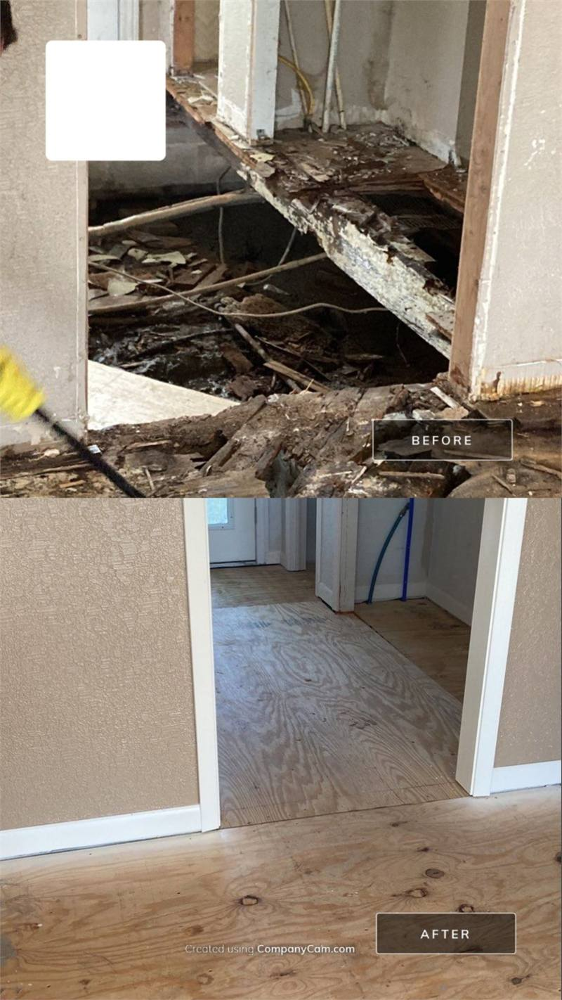
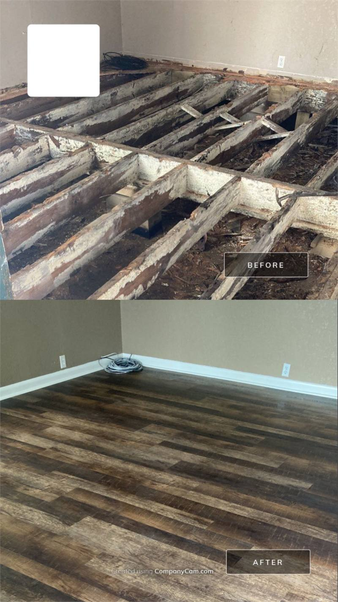
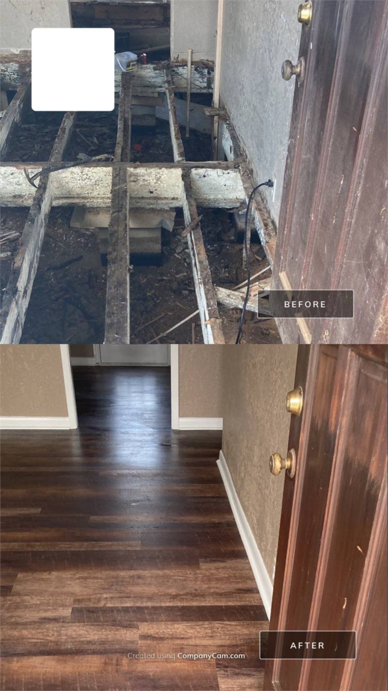
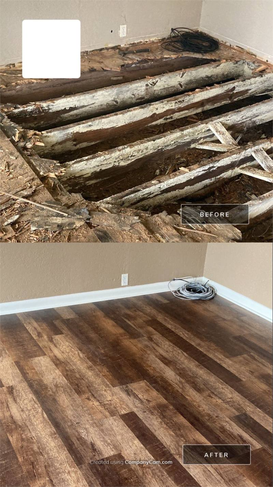
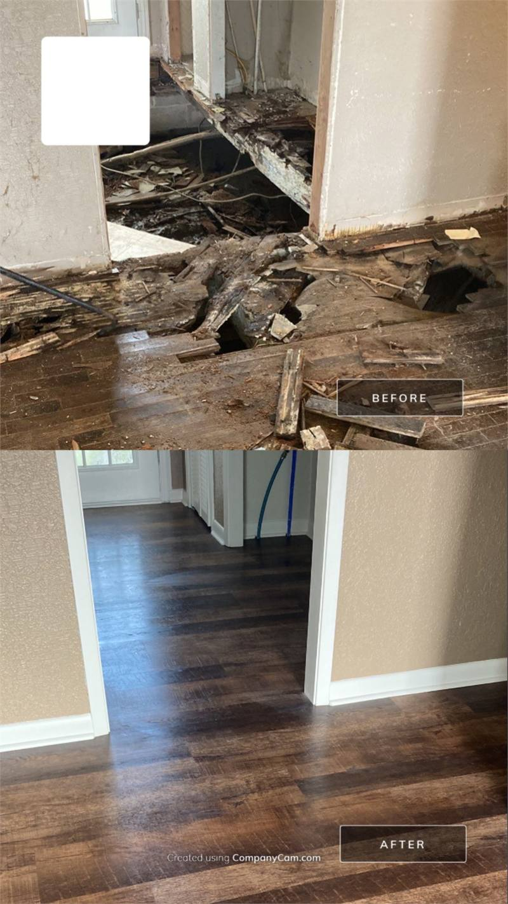

Protect the Affected Area
Limit unnecessary access until the condition has been inspected. Disturbing affected material before the work area is planned can spread debris into adjoining areas.
Crain Bros Inc has helped Northeast Arkansas property owners with mold remediation, restoration, and reconstruction since 1984. As a family-owned and operated full-service contractor, Crain Bros Inc can manage the work from the initial building conditions through the finished repairs.
Mold-related property damage can extend beyond the area that first becomes visible. This guide helps property owners understand how moisture investigation, controlled work, verification, and corrective repairs fit together.
Discuss the Mold Damage at Your PropertyLimit unnecessary access until the condition has been inspected. Disturbing affected material before the work area is planned can spread debris into adjoining areas.
The restoration must begin with the condition that allowed moisture to remain. A repair plan built around visible growth alone may leave the underlying building problem unresolved.
Photographs, measurements, moisture information, and material observations establish what was found before removal or cleaning changes the affected area.
Moisture and deterioration can continue beneath flooring, behind walls, inside cavities, or around connected building systems. Selective opening may be needed to establish the true extent.
The inspection should distinguish materials that can remain from materials that require removal. The decision depends on the material, deterioration, accessibility, and project requirements.
The verification method should be considered before reconstruction begins. Independent testing may be coordinated when the project or property conditions require it.
The finished project must address both the affected materials and the building condition that allowed moisture to persist.
A connected scope helps the property owner follow the work from inspection through completion without coordinating separate, disconnected contractors.
A sound restoration follows the property evidence. The sequence may change when conditions overlap, but each stage should prepare the building for the work that follows.
Plan the Mold Damage RestorationInspect the visible condition, surrounding materials, likely moisture path, and accessible connected areas. The goal is to understand the building problem before defining the work.
Record the affected areas and the visible or accessible material conditions. Documentation gives the property owner a clear starting point and supports later project decisions.
Design the work area around the actual condition. Containment and access controls should protect adjoining spaces while affected materials are disturbed or removed.
Remove materials that cannot remain and open the areas needed to reach concealed damage. The work should expose enough of the assembly to support cleaning, drying, repair, and verification.
Clean the affected area and address remaining surfaces according to the verified scope. The method depends on the material, condition, accessibility, and restoration plan.
Materials that will remain must be evaluated for moisture. Drying continues where the inspected conditions show that retained assemblies are not ready for enclosure.
Review the exposed work area after remediation and drying. Independent testing may be coordinated when required by the project, property conditions, or selected verification plan.
Complete the repair that addresses the underlying moisture condition. The corrective work may occur earlier when access or project sequencing requires it.
Rebuild the approved structural and finish assemblies after the area is ready for enclosure. The reconstruction should connect to the findings documented during inspection and removal.
Review the finished work and organize the final project information. The property owner receives documentation of the conditions and work developed through the restoration.
Containment separates the affected work area from portions of the building that are not part of the remediation scope. Crain Bros Inc constructs sealed barriers around the work zone and establishes controlled entry points so workers, tools, and removed materials move through planned pathways.
Negative pressure changes the direction of air movement across the containment boundary. Air is drawn toward the contained work area instead of being allowed to move freely from the work zone into surrounding rooms. The containment design may use air exchanges, filtered air-capturing equipment, or another controlled-air arrangement selected for the size and configuration of the affected area.
Equipment placement and airflow planning must work with the barrier system. The goal is to capture airborne debris generated inside the work zone while protecting unaffected portions of the building during removal and cleaning.
Containment remains in place while affected materials are disturbed and while professional cleaning is underway. The work area is evaluated before the barriers are removed or reconstruction begins.
Discuss Containment and Mold Restoration
A sealed floor-to-ceiling barrier separates the contained work area from the unaffected portion of the building while controlled zipper entries provide access.

The zipper entry creates a controlled access point between the surrounding building and the isolated work area. A second barrier is visible inside the containment.
Professional cleaning begins after materials that cannot remain have been removed and the surfaces beneath them are accessible. Crain Bros Inc cleans the exposed work area using methods selected for the material, condition, and restoration plan.
Controlled removal can leave dust and debris on framing, inside cavities, along transitions, and across irregular building surfaces. Those areas require more than ordinary surface cleaning. Professional tools and filtration or capture equipment are used as appropriate to remove residual material from the contained work zone.
Cleaning continues through the accessible areas included in the scope. The work may require repeated attention to joints, corners, ledges, penetrations, and surfaces that were previously concealed behind damaged materials.
Cleaned assemblies are protected from recontamination while drying or verification work proceeds. The area is evaluated before reconstruction conceals the restored surfaces. Independent testing may be coordinated when the property condition or selected verification plan requires it.
The cleaning plan addresses surfaces that remain after damaged materials are removed. The method is selected for the material and the condition found in the contained work area.
Detailed cleaning addresses corners, joints, ledges, transitions, penetrations, and other accessible surfaces where demolition debris can remain.
Professional tools and filtration or air-capturing equipment are used as appropriate to control debris while the contained area is cleaned.
The cleaned assembly is protected from recontamination while drying, evaluation, or independent testing proceeds.
Finished surfaces can hide the condition of the floor system, wall cavity, insulation, plumbing area, or other connected components. The restoration scope becomes more reliable after the concealed assembly is opened and documented.

Opening the floor exposed hidden deterioration around framing, plumbing, insulation, and connected building components.

Inspection documented visible mold growth and accumulated debris on a removed HVAC air register.
The floor system must be opened far enough to remove damaged materials and reach the concealed condition. Reconstruction begins only after the remaining assembly is ready to support new work.

The before-and-after view shows the damaged floor joists, framing members, and subfloor removed and replaced to rebuild the complete floor assembly.

Damaged floor joists, framing members, and subfloor were removed through the connected rooms before the complete floor assembly was rebuilt.
Mold Damage Restoration does not end when affected material is removed. Crain Bros Inc can carry the project through floor-system repair, reconstruction, finish installation, and completion of the connected interior areas.
Talk With Crain Bros Inc About Complete Restoration
The before view shows mold-damaged floor joists that were removed and replaced. The after view shows the completed room after the floor assembly was rebuilt and the finishes were installed.

The entry floor was opened to the framing, repaired, reconstructed, and finished through the adjoining hallway.

The affected floor assembly was opened and repaired before the room received finished flooring and baseboards.

Severe concealed deterioration required floor-system reconstruction before the adjoining interior could be completed.
Verification is planned around the actual property condition and the work performed. Some projects can be reviewed through documented inspection of the exposed area. Other projects may call for independent testing by a qualified third party.
The area should be evaluated before reconstruction conceals the surfaces and assemblies addressed during the work.
Photographs, measurements, moisture information, and work records help explain what was found and what was completed.
A qualified independent party may be brought into the project when the property condition, scope, or selected verification plan calls for testing.
Corrective work must account for the building assembly being repaired. Permit requirements, inspections, manufacturer instructions, access controls, and jobsite safety measures are addressed where they apply to the approved scope.
The work should account for damaged framing, substrates, insulation, mechanical components, and other concealed conditions that affect a durable repair.
Structural or trade work may require permits and inspections. Those requirements are reviewed as the repair and reconstruction scope is developed.
Products and equipment should be selected and used according to the actual application and the applicable manufacturer requirements.
Access, debris handling, containment, temporary protection, and work sequencing should match the property condition and the activities underway.
Crain Bros Inc works as a contractor on properties involved in insurance claims. The company inspects and documents property conditions, the approved project scope, work progress, repairs, reconstruction, and completed conditions. That information is provided to the property owner for use on the property owner’s own behalf.
Mold-related damage often overlaps with a moisture problem and damaged building materials. These service pages help the property owner understand the connected inspection, restoration, and repair work that may support the final scope.
The parent restoration service connects damage assessment, mitigation, verification, repairs, and reconstruction across the affected property.
Learn moreWater restoration addresses active moisture, affected materials, structural drying, and repairs when mold-related conditions overlap with water damage.
Learn moreEmergency work can help protect the property when active water entry, unsafe conditions, or exposed building areas require immediate attention.
Learn moreInspection and diagnostics help establish the moisture source, concealed extent, and connected building conditions before the work is designed.
Learn moreDrainage, waterproofing, or crawlspace work may be needed when moisture is entering through the foundation area or remaining beneath the building.
Learn moreGeneral contracting connects corrective repairs, required trades, inspections, and reconstruction after the affected area is ready to rebuild.
Learn moreFraming work repairs structural and nonstructural floor, wall, ceiling, or roof components documented in the restoration scope.
Learn moreFlooring work restores the approved floor system after the underlying condition has been corrected and the substrate is ready.
Learn moreMechanical work addresses air-handling components, drainage, insulation, or equipment when the inspected scope identifies an affected HVAC component.
Learn morePlumbing work corrects failed supply, drain, fixture, or connected water-system components included in the approved restoration.
Learn moreInsulation work removes affected material and restores the approved assembly after concealed conditions are accessible and ready.
Learn moreDrywall work restores walls and ceilings after concealed work is complete and the affected assembly is ready for enclosure.
Learn moreWaterproofing work addresses water entry through the building exterior or foundation area when the inspected moisture source requires a permanent correction.
Learn moreCrawlspace encapsulation and moisture control may support the restoration when damp conditions beneath the building contribute to the affected area.
Learn moreCrain Bros Inc is family owned and operated and has served Northeast Arkansas since 1984. Call to discuss the property condition, moisture concerns, inspection needs, restoration planning, corrective repairs, and reconstruction.
Get Help Restoring Your PropertyMold-related damage can continue when moisture remains in the building. The inspection should identify the source, trace the affected area, and determine which materials and assemblies require attention before the restoration plan is finalized.
No. Testing needs depend on the property conditions, project requirements, and the verification approach selected for the work. Crain Bros Inc can coordinate independent testing when the project requires it.
No. Crain Bros Inc evaluates building conditions and performs property restoration work. Questions about personal health belong with qualified medical professionals.
Containment separates the work area from unaffected parts of the building. The layout and controls should match the actual affected area and the work being performed.
Some materials may be suitable for cleaning, while others may need removal because of deterioration, material characteristics, or the extent of the affected condition. The decision should be based on the inspected property rather than a one-size-fits-all rule.
The affected area should be inspected after removal, cleaning, remediation, and drying work are complete. Verification helps confirm that the exposed area is ready before new materials conceal it.
Yes. Crain Bros Inc can connect corrective repairs and reconstruction to the Mold Damage Restoration scope so the property owner is not left coordinating disconnected stages of the project.
Project documentation may include photographs, measurements, material observations, affected-area records, moisture information, and notes describing conditions uncovered during the work.
Yes. A leak or another moisture condition may create both water damage and mold-related damage. The restoration plan should account for the connected conditions rather than treating each visible symptom in isolation.
Crain Bros Inc works as a contractor on properties involved in insurance claims. The company documents property conditions and project work so the property owner can use that information on the property owner’s own behalf.